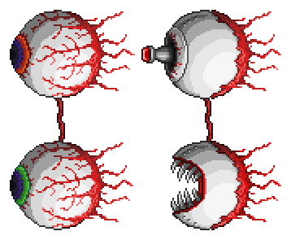

The Twins is a much more difficult version of the Eye of Cthulhu.
Instead of one eyeball, there are two eyeballs this time.
One with the red iris is called Retinazer. Other with green iris is called Spazmatism.
Retinazer attacks consist of shooting quick purple lasers and usually floats diagonally above the player
Spazmatism is much more aggressive. Its attacks consist of medium-speed green fire balls and usually floats near the player
Both of the eyeballs are able to dash towards the player, inflicting melee damage
When the health of each Twin reaches below 40%, the Twin changes into its second form.
In Retinazer's second form, it becomes a mechanical eyeball with a laser cannon coming out of its pupil.
Retinazer's attacks now shoots out Death Lazers that are much faster and deal much more damage
Retinazer also periodically shoots out a huge barrage of low-damaging lazers towards the player now
In Spazmatism's second form, it becomes a mechanical eyeball with its pupil enveloped inside, making a mouth full of fangs coming out.
Spazmatism's speed increases and its dashes are significantly faster with greater range.
Spazmatism's now bursts out streams of cursed flame, like a flamethrower, towards the player. It inflicts cursed inferno debuff on touch
The Twins can randomly spawn with a 10% chance at dusk under these conditions:
The Brain of Cthulhu can be manually summoned using the Mechanical Eye at night.
Mechanical Eye can be crafted using the following items on a Mythril/Orichalcum Anvil:
The Twins can be only fought during nighttime. If the day becomes daytime, The Twins will despawn.
